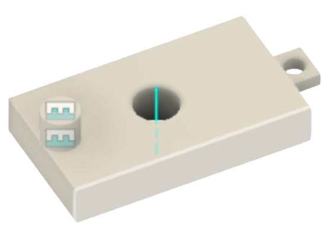
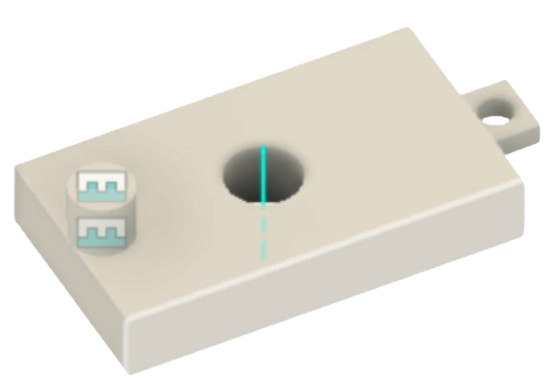

Candy Dispenser
In my Introduction to Product Realization course, the final project was to
make a candy dispenser. There were a few design specifications that had to
be met for the project which added some additional challenge:
Can store up to twenty candies - The "candies" were plastic spheres, about 1mm in diameter
Dispense the candies one at a time
Reset set itself automatically
Have some form of rotary motion
Candies must have a designated release spot
Components had to be 3D printed or laser cut
I started this project by making some initial sketches of potential ideas.
I also had to research how I wanted to incorporate a mechanism that used
rotary motion. I decided on using a crank and slider, where the user would
turn the crank, and the slider would push the candies out of the machine. I
worked then to create early rapid prototypes of the the key components of my
machine:
The candy holder, which would need to be able to hold 20 pieces of candy
The slider, which pushes candy into a hole for dispensing, with a spring
attached to it for resetting.
The crank and slider, which will translate the rotary motion of the crank
into the linear motion of the slider.
Next, I worked to create a basic 3D model of my candy dispenser in CAD. After
prototype testing, I decided to make the candy holder more of a funnel shape,
and added in the base and candy catcher at the end of the chute as well.
The next step in the design process was to create a functional prototype,
where some of the parts were manufactured and some of the parts were still
made from the rapid prototyping materials.
After this I modeled the entire assembly in CAD so that I could begin
3D printing my components.
After creating 3D printing all of the components I assembled the candy machine.
Then I tested my entire candy machine for its functionality. I also had to create
an engineering drawing for one of my components and an exploded BOM. This project
was successful as I was able to create a fully functional candy machine that met
all of the design specifications.


 
